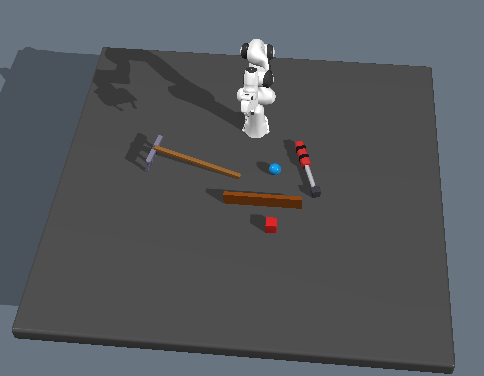
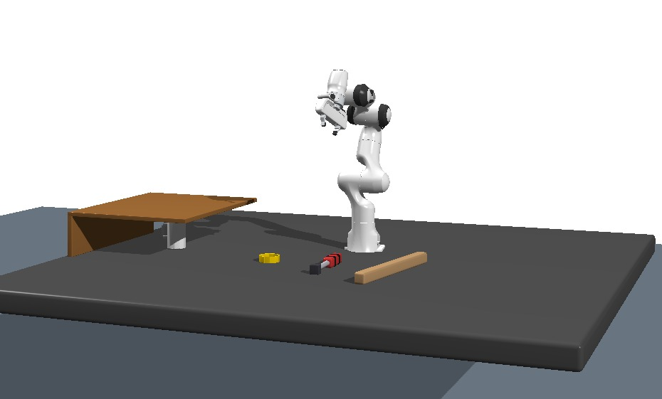

Evaluation Scenarios
Three constrained tabletop manipulation tasks. Each scenario details the specific role GPT-5.5 plays in guiding motion planning beyond mere tool selection.

scenario1_wall_retrieval.pngor replace the image path.
Scenario 1 · Wall Retrieval
Target object behind a rigid wall, retrieved by grasping one end of a rigid tool and dragging.
PULL
scenario2_screwdriver_insertion.pngor replace the image path.
Scenario 2 · Screwdriver Insertion
Rotational actuation of a target using a screwdriver-like tool with a VLM-determined rotation waypoint.
INSERT / ROTATE
scenario3_shelf_retrieval.pngor replace the image path.
Scenario 3 · Shelf Retrieval
Cup under a low-clearance shelf swept out with vector-aligned tool orientation and brought into the robot's reachable workspace.
SWEEP → GRASPVLM Contributions per Scenario
Scenario 1: Wall Retrieval (Pulling)
PULL · Tip LocalizationA target object is placed behind a rigid wall, beyond the robot's direct reach. The system selects a long, rigid tool, grasps it from one end, and uses the opposite tip to drag the object into the reachable workspace. The primary geometric challenge is accurate functional tip localization: the contact point must be at the far end of the tool, not its center.
During the motion planning stage, the VLM semantically understands the environment and performs semantic planning over the detected clusters. It is queried to determine the approach angle and the direction in which the functional tip should be oriented — acting as a waypoint generator. The functional tip is then aligned toward this VLM-defined point. Afterwards, the VLM is queried a second time to determine how far the target must be dragged so that it becomes reachable by the robot, providing a drag endpoint waypoint that terminates the pull motion.
Scenario 2: Screwdriver Insertion
INSERT / ROTATE · Non-translational PlanningA target object requires actuation via a rotational motion. The VLM selects a screwdriver-like tool from the segmented point cloud clusters, and the best antipodal grasp point is computed within the VLM-specified handle region.
The VLM analyzes the scene and determines an appropriate rotation waypoint for the screwing motion. This waypoint is also used to align the tool along the vertical axis before the screw motion begins. Once the functional tip (back-projected to 3D from the VLM's contact pixel via the depth channel) reaches the target position, the KOMO planner executes the rotational trajectory. The VLM thus guides a non-translational end-effector motion entirely through semantic scene reasoning.
Scenario 3: Shelf Retrieval (Sweeping)
SWEEP → GRASP · Constrained InsertionA cup placed under a low-clearance shelf cannot initially be reached by the robot. The robot must navigate a pushing tool through the narrow gap and sweep the cup into a position within the robot's reachable workspace. This is the most geometrically constrained scenario: incorrect tool orientation causes shelf collisions or joint-limit violations.
The VLM is queried in a Chain-of-Thought manner to identify the functional tip (C) and grasp point (G), constructing the tool axis vector GC. It also determines two points A and B behind the shelf edges — one near the robot side, one at the far side — defining the sweep direction vector AB. The tool orientation is then adjusted until AB ⊥ GC (computed via dot product), preventing shelf collisions. The robot sweeps with the tool guided by the VLM-defined point A and height. After sweeping, the cup is brought into a position within the robot's reachable workspace. This multi-query VLM strategy makes the pipeline robust to domain randomization and varying initial tool placements.